import pandas as pd
import numpy as np
from sklearn.linear_model import LinearRegression
import matplotlib.pyplot as plt
import seaborn as sns
# 데이터 불러오기
train_df = pd.read_csv('../../../lsbigdata-project1/house price/train.csv')
test_df = pd.read_csv('../../../lsbigdata-project1/house price/test.csv')
submission = pd.read_csv('../../../lsbigdata-project1/house price/sample_submission.csv')데이터 불러오기
0. 모든 변수 결측치와 정보 확인
pd.set_option('display.max_rows',None)
nan_df = train_df.isna().sum()
nan_df[nan_df>0]
pd.reset_option('display.max_rows')train_df.info()<class 'pandas.core.frame.DataFrame'>
RangeIndex: 1460 entries, 0 to 1459
Data columns (total 81 columns):
# Column Non-Null Count Dtype
--- ------ -------------- -----
0 Id 1460 non-null int64
1 MSSubClass 1460 non-null int64
2 MSZoning 1460 non-null object
3 LotFrontage 1201 non-null float64
4 LotArea 1460 non-null int64
5 Street 1460 non-null object
6 Alley 91 non-null object
7 LotShape 1460 non-null object
8 LandContour 1460 non-null object
9 Utilities 1460 non-null object
10 LotConfig 1460 non-null object
11 LandSlope 1460 non-null object
12 Neighborhood 1460 non-null object
13 Condition1 1460 non-null object
14 Condition2 1460 non-null object
15 BldgType 1460 non-null object
16 HouseStyle 1460 non-null object
17 OverallQual 1460 non-null int64
18 OverallCond 1460 non-null int64
19 YearBuilt 1460 non-null int64
20 YearRemodAdd 1460 non-null int64
21 RoofStyle 1460 non-null object
22 RoofMatl 1460 non-null object
23 Exterior1st 1460 non-null object
24 Exterior2nd 1460 non-null object
25 MasVnrType 588 non-null object
26 MasVnrArea 1452 non-null float64
27 ExterQual 1460 non-null object
28 ExterCond 1460 non-null object
29 Foundation 1460 non-null object
30 BsmtQual 1423 non-null object
31 BsmtCond 1423 non-null object
32 BsmtExposure 1422 non-null object
33 BsmtFinType1 1423 non-null object
34 BsmtFinSF1 1460 non-null int64
35 BsmtFinType2 1422 non-null object
36 BsmtFinSF2 1460 non-null int64
37 BsmtUnfSF 1460 non-null int64
38 TotalBsmtSF 1460 non-null int64
39 Heating 1460 non-null object
40 HeatingQC 1460 non-null object
41 CentralAir 1460 non-null object
42 Electrical 1459 non-null object
43 1stFlrSF 1460 non-null int64
44 2ndFlrSF 1460 non-null int64
45 LowQualFinSF 1460 non-null int64
46 GrLivArea 1460 non-null int64
47 BsmtFullBath 1460 non-null int64
48 BsmtHalfBath 1460 non-null int64
49 FullBath 1460 non-null int64
50 HalfBath 1460 non-null int64
51 BedroomAbvGr 1460 non-null int64
52 KitchenAbvGr 1460 non-null int64
53 KitchenQual 1460 non-null object
54 TotRmsAbvGrd 1460 non-null int64
55 Functional 1460 non-null object
56 Fireplaces 1460 non-null int64
57 FireplaceQu 770 non-null object
58 GarageType 1379 non-null object
59 GarageYrBlt 1379 non-null float64
60 GarageFinish 1379 non-null object
61 GarageCars 1460 non-null int64
62 GarageArea 1460 non-null int64
63 GarageQual 1379 non-null object
64 GarageCond 1379 non-null object
65 PavedDrive 1460 non-null object
66 WoodDeckSF 1460 non-null int64
67 OpenPorchSF 1460 non-null int64
68 EnclosedPorch 1460 non-null int64
69 3SsnPorch 1460 non-null int64
70 ScreenPorch 1460 non-null int64
71 PoolArea 1460 non-null int64
72 PoolQC 7 non-null object
73 Fence 281 non-null object
74 MiscFeature 54 non-null object
75 MiscVal 1460 non-null int64
76 MoSold 1460 non-null int64
77 YrSold 1460 non-null int64
78 SaleType 1460 non-null object
79 SaleCondition 1460 non-null object
80 SalePrice 1460 non-null int64
dtypes: float64(3), int64(35), object(43)
memory usage: 924.0+ KB‘Id’ : 수치컬럼에서 제외해야 함.
‘MSSubClass’ : 수치컬럼으로 되어있는데, 범주컬럼임.
‘LotFrontage’ : 259개 결측치는 집에 연결된 거리가 없어서 결측치인걸까? 그렇다면 0값으로 처리해주기.
‘Alley’ : 1369개 결측치는 골목길이 없다는 것임.
수치컬럼의 분포 확인 함수
def train_numeric_hist(col):
plt.clf()
plt.rcParams['font.family'] = 'Malgun Gothic'
plt.rcParams['axes.unicode_minus'] = False
a = col + "의 분포"
plt.title(a)
plt.tight_layout()
sns.histplot(train_df[col], stat='density')
plt.show()수치컬럼과 y컬럼의 관계 확인 함수
def train_rel_xy(col):
plt.clf()
plt.rcParams['font.family'] = 'Malgun Gothic'
plt.rcParams['axes.unicode_minus'] = False
a = col + "과 SalePrice의 관계"
plt.title(a)
plt.tight_layout()
sns.scatterplot(data=train_df, x=col, y='SalePrice')
plt.show()범주컬럼의 빈도 확인 함수
def train_cat_count(col):
plt.clf()
plt.rcParams['font.family'] = 'Malgun Gothic'
plt.rcParams['axes.unicode_minus'] = False
a = col + "의 범주별 빈도 확인"
plt.title(a)
plt.tight_layout()
sns.countplot(train_df[col])
plt.show()범주컬럼의 범주별 분포 비교 함수
def train_cat_hist(col):
plt.clf()
plt.rcParams['font.family'] = 'Malgun Gothic'
plt.rcParams['axes.unicode_minus'] = False
a = col + "의 범주별 분포 비교"
plt.title(a)
plt.tight_layout()
cats = train_df[col].value_counts().sort_values().index
for i in range(len(cats)):
sns.histplot(train_df[train_df[col]==cats[i]]['SalePrice'], stat='density')
plt.show()범주컬럼의 범주별로 x컬럼과 y컬럼의 관계 확인 함수
WxColourDB = ['black', 'red', 'chocolate','darkorange','darkgoldenrod','olive','plum','lightslategrey','forestgreen','gold','lightseagreen','fuchsia','deepskyblue','slateblue','mediumorchid']
def train_cat_rel_xy(col1, col2): # col1 : 수치, col2:범주
plt.clf()
plt.rcParams['font.family'] = 'Malgun Gothic'
plt.rcParams['axes.unicode_minus'] = False
a = col1 + "의" + col2 + "범주별 SalePrice와의 관계 비교"
plt.title(a)
plt.tight_layout()
cats = train_df[col2].value_counts().sort_values(ascending=False).index
for i in range(len(cats)):
a = train_df[train_df[col2]==cats[i]][[col1,'SalePrice']]
n = np.random.choice(np.arange(len(WxColourDB)),len(WxColourDB),replace=False)
n = n.tolist()[i]
sns.scatterplot(data=a, x=col1, y='SalePrice', color=WxColourDB[n]) # 색 달라져야함
plt.show()n = np.random.choice(np.arange(len(WxColourDB)),len(WxColourDB),replace=False)
n.tolist()
n.tolist()[2]
WxColourDB = ['black', 'red', 'chocolate','darkorange','darkgoldenrod','olive','plum','lightslategrey','forestgreen','gold','lightseagreen','fuchsia','deepskyblue','slateblue','mediumorchid']
plt.clf()
sns.scatterplot(data=train_df, x='LotArea', y='SalePrice', color=WxColourDB[12]) # 색 달라져야함
plt.show()1. ‘SalePrice’ : 판매 가격
train_numeric_hist('SalePrice')
print("최소값 :", train_df['SalePrice'].min())
print("최대값 :", train_df['SalePrice'].max())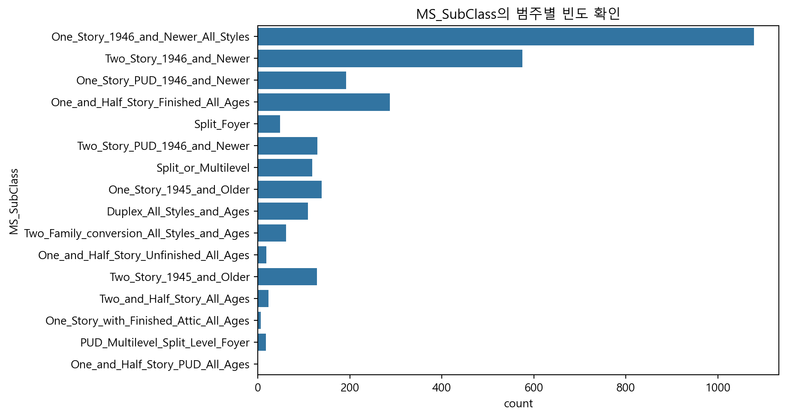
최소값 : 34900
최대값 : 755000이상치 있어보임. 100,000~200,000 달러가 제일 많아보임.
2. ‘MSSubClass’ : 판매 관련 주택 타입 (1층인지, 2층인지, 언제적 집구조인지, 다세대인지 등등) <- 수치컬럼으로 되어 있지만 범주 컬럼임.
train_df['MSSubClass'] = train_df['MSSubClass'].astype(str) # 범주 컬럼 처리
train_cat_count('MSSubClass')
train_cat_hist('MSSubClass')
print(train_df['MSSubClass'].value_counts().sort_index())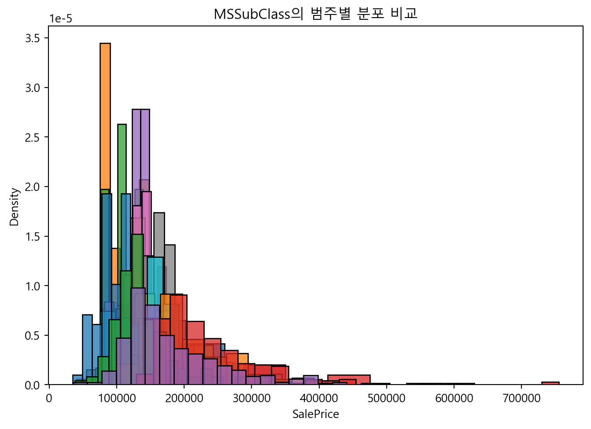
MSSubClass
120 87
160 63
180 10
190 30
20 536
30 69
40 4
45 12
50 144
60 299
70 60
75 16
80 58
85 20
90 52
Name: count, dtype: int64 20 1946년부터 그 이후로 지어진 1층 짜리 최신 집 (1938, 1946~2010년에 지어진 집들임.)
30 1945년부터 그 이전으로 지어진 1층 짜리 오래된 집 (1885, 1910~1945, 1948에 지어진 집임.)
40 다락방이 있는 1층짜리 집 <- 데이터 4개밖에 없음 (1926,1930,1949,1979)
45 2층짜리 집이지만, 삐족한 지붕때문에 2층의 절반은 없는 미완성 집
50 2층짜리 집이지만, 삐족한 지붕때문에 2층의 절반은 없는 완성된 집
60 1946년부터 그 이후로 지어진 2층 짜리 최신 집 (1946~2009에 지어진 집임)
70 1945년부터 그 이전으로 지어진 2층 짜리 오래된 집 (1872~1945에 지어진 집임)
75 3층짜리 집이지만, 삐족한 지붕때문에 3층의 절반은 없는 집
80 각 층이 엇갈려있는 집
85 현관 앞에 계단으로 층이 엇갈려있는 집
90 다세대 주택 (한 건물에 집이 나눠져 있고 여러 유닛이 삶)
120 1946년부터 그 이후로 지어진 1층짜리 최신 연립주택 그룹 (집이 모여있음)
150 2층짜리 집이지만, 삐족한 지붕때문에 2층의 절반은 없는 연립주택 그룹 (집이 모여있음)
160 1946년부터 그 이후로 지어진 2층짜리 최신 연립주택 그룹 (집이 모여있음)
180 연립주택 그룹 + 각 층이 엇갈림 + 현관 계단 집
190 한 집을 두 집으로 개조해서 쪼갠 집cols = train_df.columns
train_df[train_df['MSSubClass'] == 20]['YearBuilt'].sort_values() # 'MSSubClass'=20은 1938, 1946~2010에 지어진 집임Series([], Name: YearBuilt, dtype: int64)train_df[train_df['MSSubClass'] == 30]['YearBuilt'].sort_values() # 'MSSubClass'=30은 1885, 1910~1945, 1948에 지어진 집임Series([], Name: YearBuilt, dtype: int64)train_df[train_df['MSSubClass'] == 60]['YearBuilt'].sort_values() # 'MSSubClass'=60은 1946~2009에 지어진 집임Series([], Name: YearBuilt, dtype: int64)train_df[train_df['MSSubClass'] == 70]['YearBuilt'].sort_values() # 'MSSubClass'=70은 1872~1945에 지어진 집임Series([], Name: YearBuilt, dtype: int64)train_df[train_df['MSSubClass'] == 120]['YearBuilt'].sort_values() # 1976~2009에 지어진 집임.Series([], Name: YearBuilt, dtype: int64)3. ‘MSZoning’ : 판매 관련 일반 구역 분류 (수상 거주지인지, 밀도가 높은 거주지인지 등)
train_cat_count('MSZoning')
train_cat_hist('MSZoning')
print(train_df['MSZoning'].value_counts())
MSZoning
RL 1151
RM 218
FV 65
RH 16
C (all) 10
Name: count, dtype: int64 A 농업
C 상업
FV 수상 거주지
I 산업
RH 높은 밀도 거주지
RL 낮은 밀도 거주지
RP Residential Low Density Park
RM 중간 밀도 거주지=> 데이터상 RL, RM, RH, FV, C(all) 만 있음.
빈도를 확인해보면, 제일 많은게 RL(낮은 밀도 거주지)임.
범주별 분포를 보면, 범주마다 집값이 살짝 다른 것 같음. 보라색 분포에 이상치도 존재하는 것 같다.
4. ‘LotFrontage’ : 집과 연결된 거리의 직선 길이 (feet)
train_numeric_hist('LotFrontage')
train_rel_xy('LotFrontage')결측치 259개 있음. <- 집에 연결된 거리가 없어서 결측치인걸 수도 있음. 그렇다면 0값으로 처리해주기.
LotFrontage의 분포를 보면 이상치 있어보임. LotFrontage과 SalePrice의 관계를 보면 많이 퍼져있기는한데 이상치를 제외하면 양의 관계가 있는 것 같기도 함.
train_cat_rel_xy('LotFrontage', 'MSZoning') # 범주별로 y값과의 관계를 알아봄.
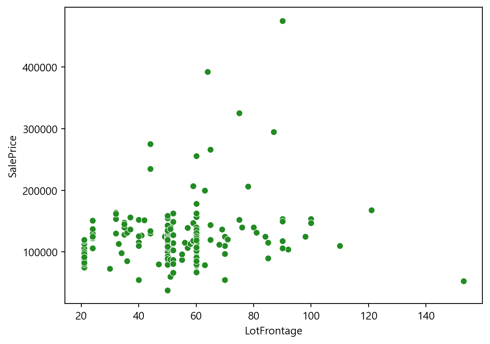
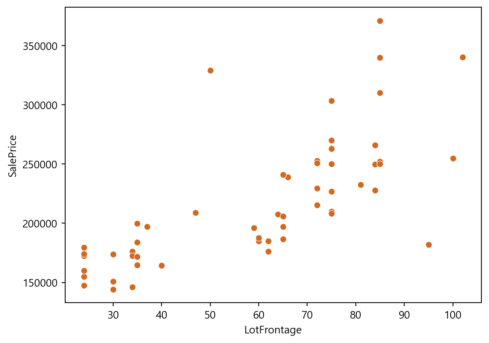
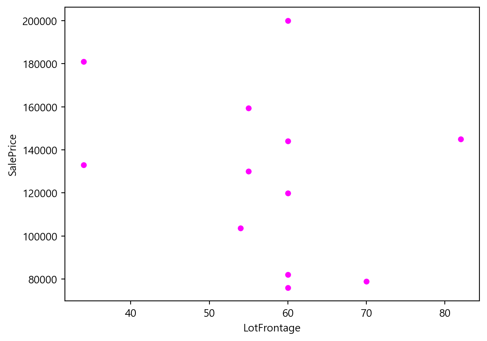
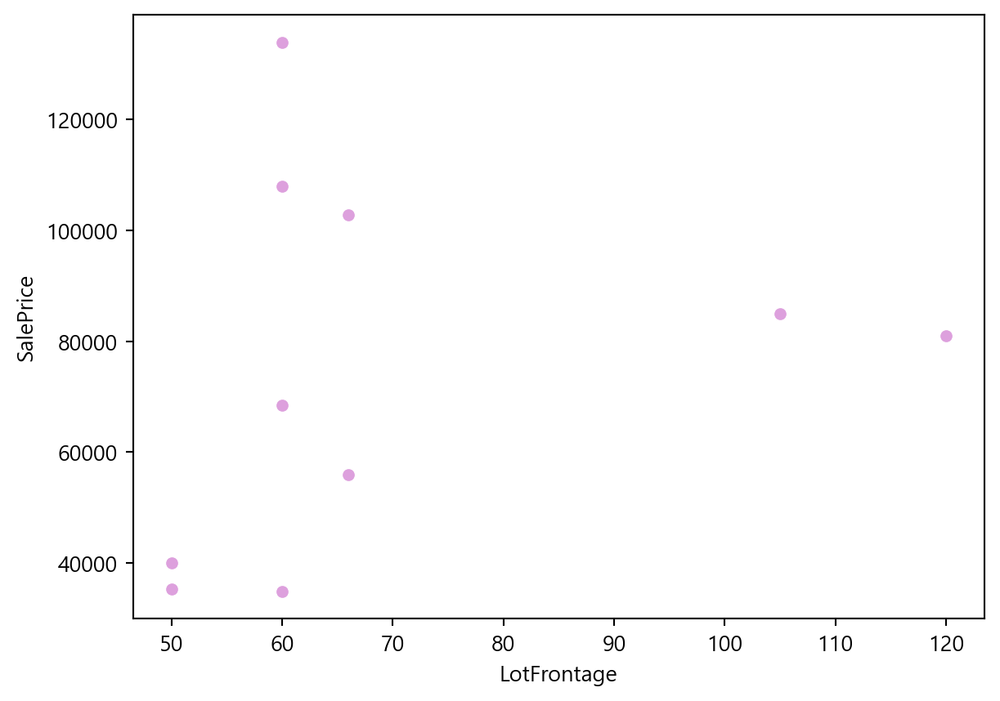
plt.clf()
sns.scatterplot(data=train_df, x = 'LotFrontage', y='SalePrice', hue='MSZoning')
plt.show()plt.clf()
sns.scatterplot(data=train_df, x = 'LotFrontage', y='LotArea', size='SalePrice')
plt.show()
train_df['MSSubClass'] = train_df['MSSubClass'].astype(str)
plt.clf()
sns.scatterplot(data=train_df, x = 'MSSubClass', y='Neighborhood', size='SalePrice')
plt.show()5. ‘LotArea’ : 부지 크기 (square feet)
train_numeric_hist('LotArea')
train_rel_xy('LotArea')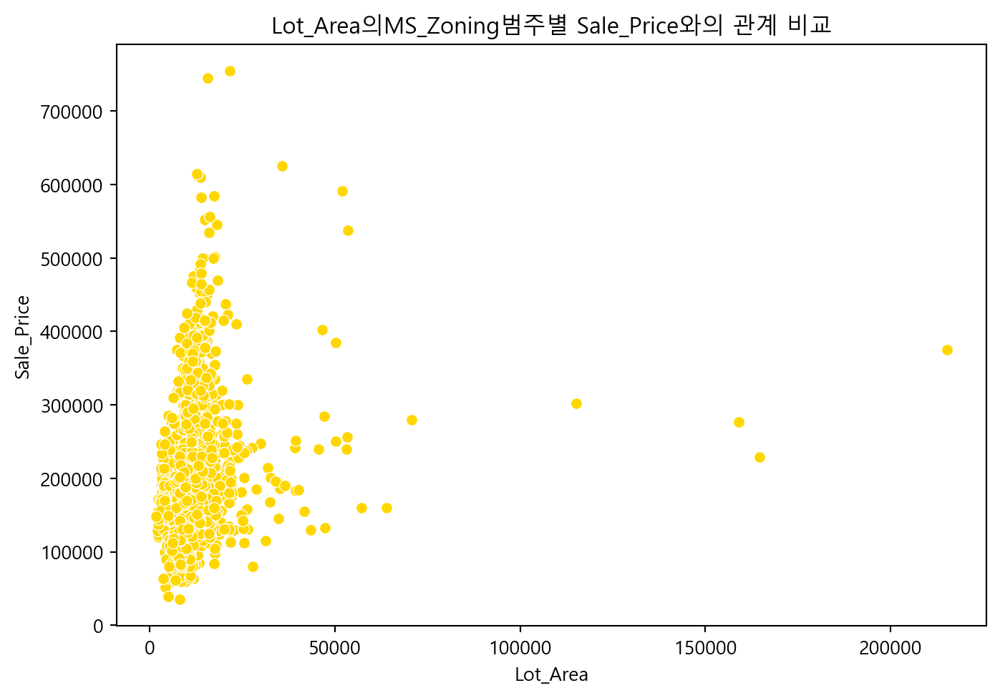
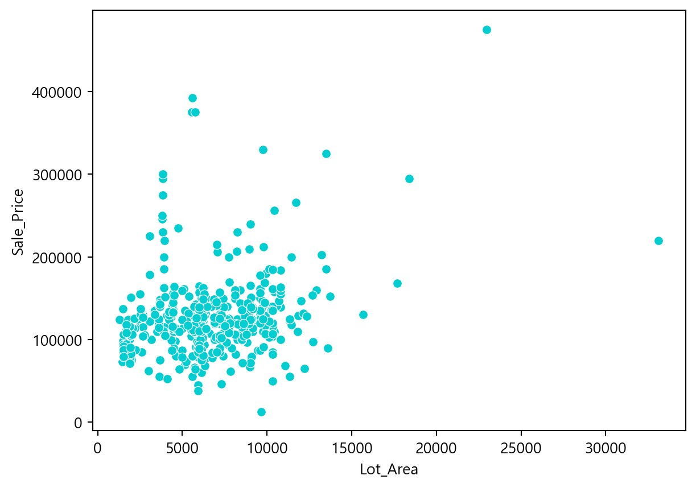
LotArea의 분포를 보면 이상치 있어보임. LotArea과 SalePrice의 관계를 보면 일부의 집 때문에 굉장히 퍼지는 관계임.
train_cat_rel_xy('LotArea', 'MSZoning') # 범주별로 y값과의 관계를 알아봄.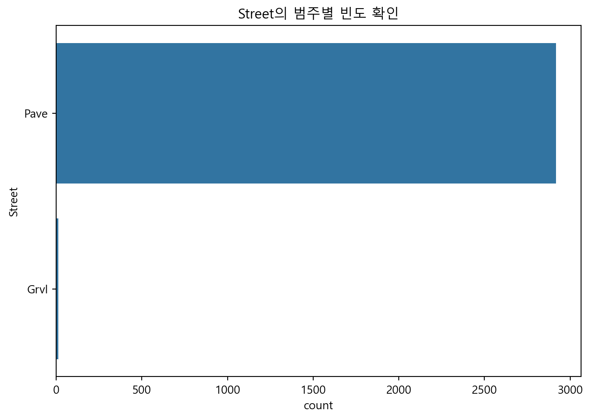
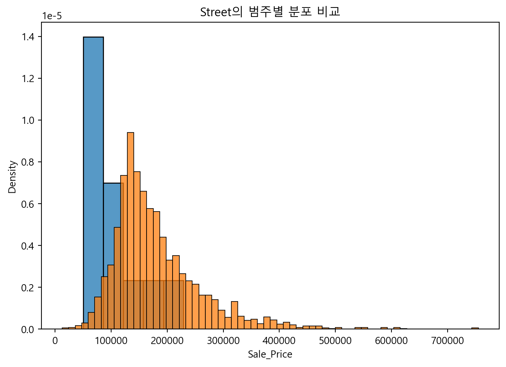
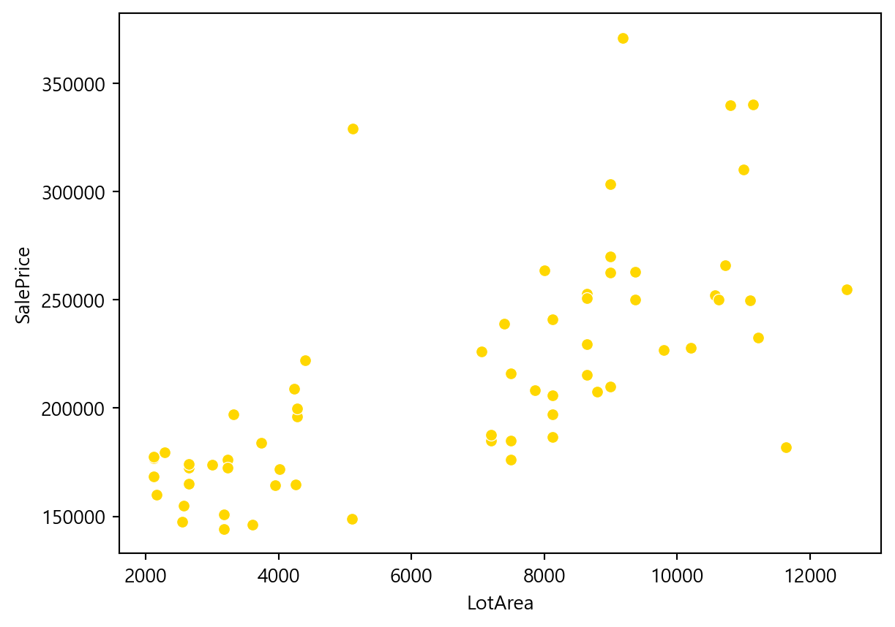
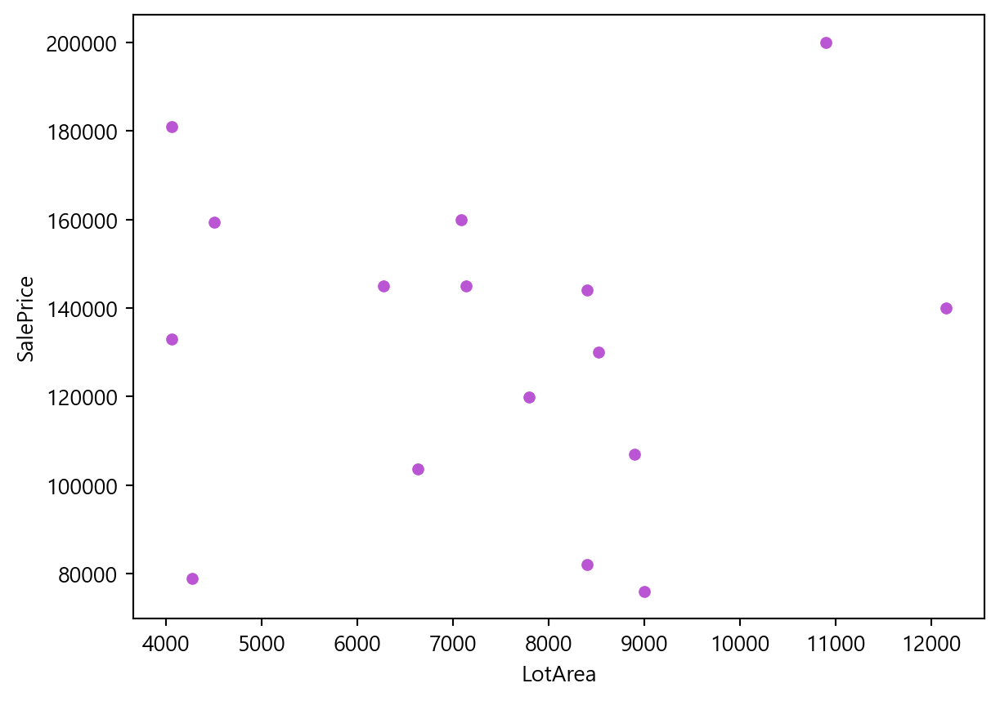
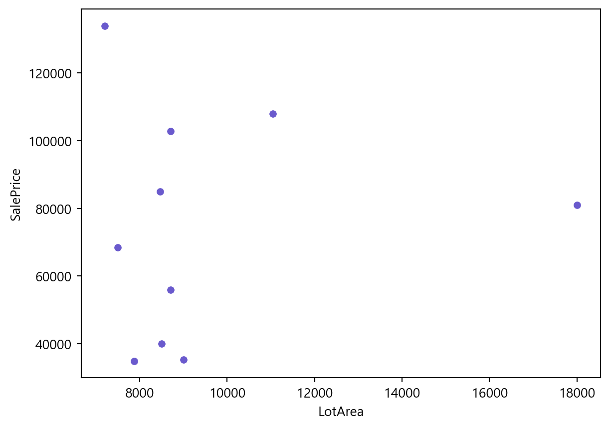
6. ‘Street’ : 집에 접근 도로 유형 (자갈길인지, 포장길인지)
train_cat_count('Street')
train_cat_hist('Street')
print(train_df['Street'].value_counts())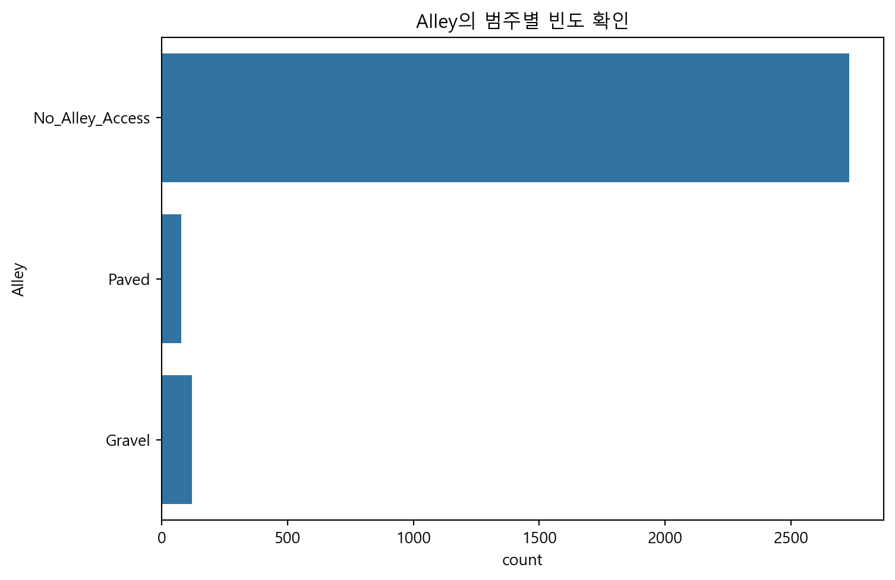
Street
Pave 1454
Grvl 6
Name: count, dtype: int64 Grvl 자갈길
Pave 포장길자갈길이 6개밖에 안됨. 범주별 분포를 보면, 포장길에 이상치가 있어보임.
7. ‘Alley’ : 집에 접근 골목 유형 (자갈 골목길인지, 포장 골목길인지)
train_cat_count('Alley')
train_cat_hist('Alley')
print(train_df['Alley'].value_counts())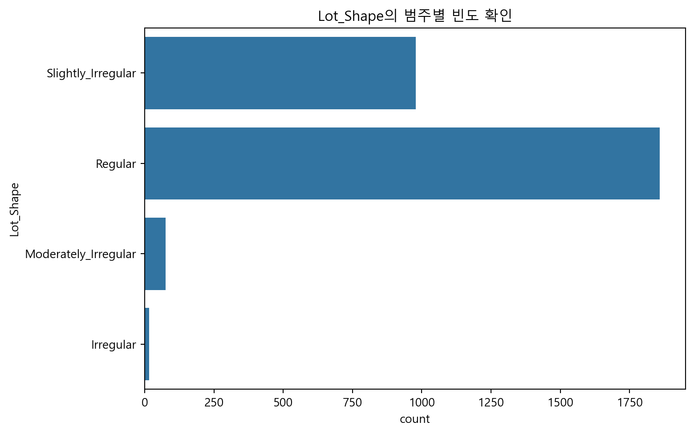
Alley
Grvl 50
Pave 41
Name: count, dtype: int64 Grvl 자갈 골목길
Pave 포장된 골목길
NA 골목길 없음1369 결측치 있음. <- 이게 다 골목길 없다는 것임. 범주별 분포가 많이 다름. <- 범주별로 집 가격 차이가 있을 것임.
8. ‘LotShape’ : 일반적인 집 모양 (일반적인 모양인지, 일반적이지 않은 모양인지 등)
train_cat_count('LotShape')
train_cat_hist('LotShape')
print(train_df['LotShape'].value_counts())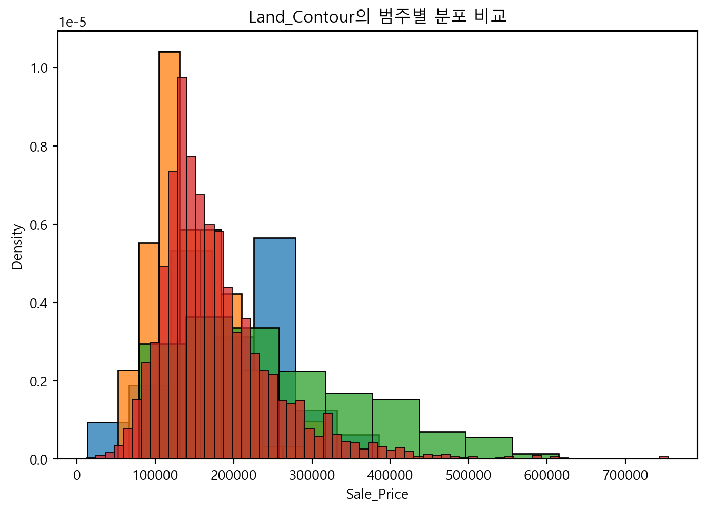
LotShape
Reg 925
IR1 484
IR2 41
IR3 10
Name: count, dtype: int64 Reg 보통
IR1 약간 보통이 아님
IR2 중간 정도 보통이 아님
IR3 보통이 아님일반적이지 않은 집이 10개 있음. 이상치에 해당하는 집일 수도…?
범주별 분포가 크게 다른 것 같진 않음. 근데 파란색분포는 살짝 다른 것 같음.
주황색 분포에 이상치가 있어보임.
9. ‘LandContour’ : 집의 평탄 정도
train_cat_count('LandContour')
train_cat_hist('LandContour')
print(train_df['LandContour'].value_counts())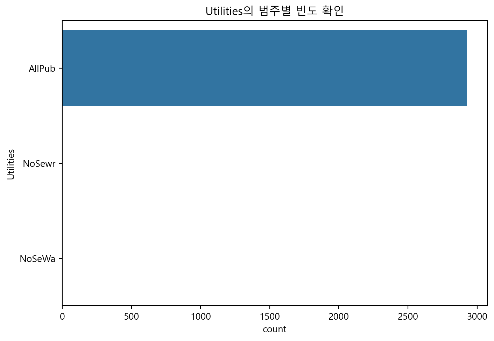

LandContour
Lvl 1311
Bnk 63
HLS 50
Low 36
Name: count, dtype: int64 Lvl 평평한 것에 가까움
Bnk 기움 - Quick and significant rise from street grade to building
HLS 비탈 - Significant slope from side to side
Low 움푹한 곳평평한 것에 가까운게 많음. 범주별 분포 차이가 없어 보임. 파란색 분포에 이상치가 있어보임.
10. ‘Utilities’ : 전기, 가스, 수도, 하수도 사용 가능 여부
train_cat_count('Utilities')
plt.clf()
sns.histplot(train_df[train_df['Utilities']=='AllPub']['SalePrice'], stat='density')
#sns.histplot(train_df[train_df['Utilities']=='NoSewr']['SalePrice'], stat='density')
#sns.histplot(train_df[train_df['Utilities']=='NoSeWa']['SalePrice'], stat='density')
#sns.histplot(train_df[train_df['Utilities']=='ELO']['SalePrice'], stat='density')
plt.title('Utilities 범주별, SalePrice 분포')
plt.tight_layout()
plt.show()
print(train_df['Utilities'].value_counts())Utilities
AllPub 1459
NoSeWa 1
Name: count, dtype: int64 AllPub 전기, 가스, 물, 하수도
NoSewr 전기, 가스, 물 (정화조)
NoSeWa 전기, 가스
ELO 전기전기, 가스만 사용가능한 집이 1개만 있고, 그 외에는 모두 사용 가능한 집임. 이상치 존재해 보임.
11. ‘LotConfig’ : 부지 배열 (부지 위치가 안쪽인지, 코너인지, 도로가 몇 개인지 등)
train_cat_count('LotConfig')
train_cat_hist('LotConfig')
print(train_df['LotConfig'].value_counts())LotConfig
Inside 1052
Corner 263
CulDSac 94
FR2 47
FR3 4
Name: count, dtype: int64 Inside 안쪽 부지
Corner 코너 부지
CulDSac 출입하는 길이 하나인 곳
FR2 도로.강을 향한 면이 2곳
FR3 도로.강을 향한 면이 3곳범주별로 분포 차이가 없어보임. 초록색, 주황색 분포에 이상치가 있어보임.
12. ‘LandSlope’ : 집 토지 경사 (경사가 약간인지, 심각한지 등)
train_cat_count('LandSlope')
train_cat_hist('LandSlope')
print(train_df['LandSlope'].value_counts())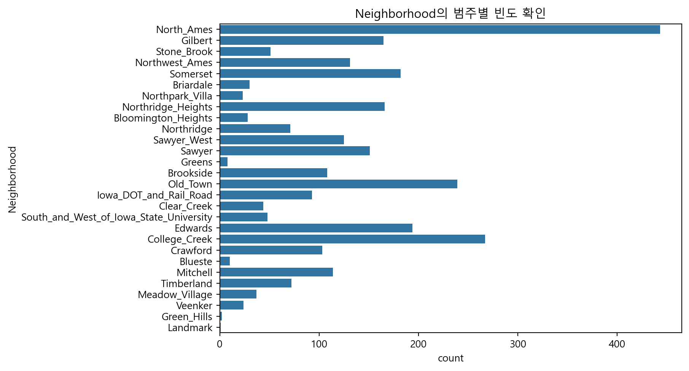
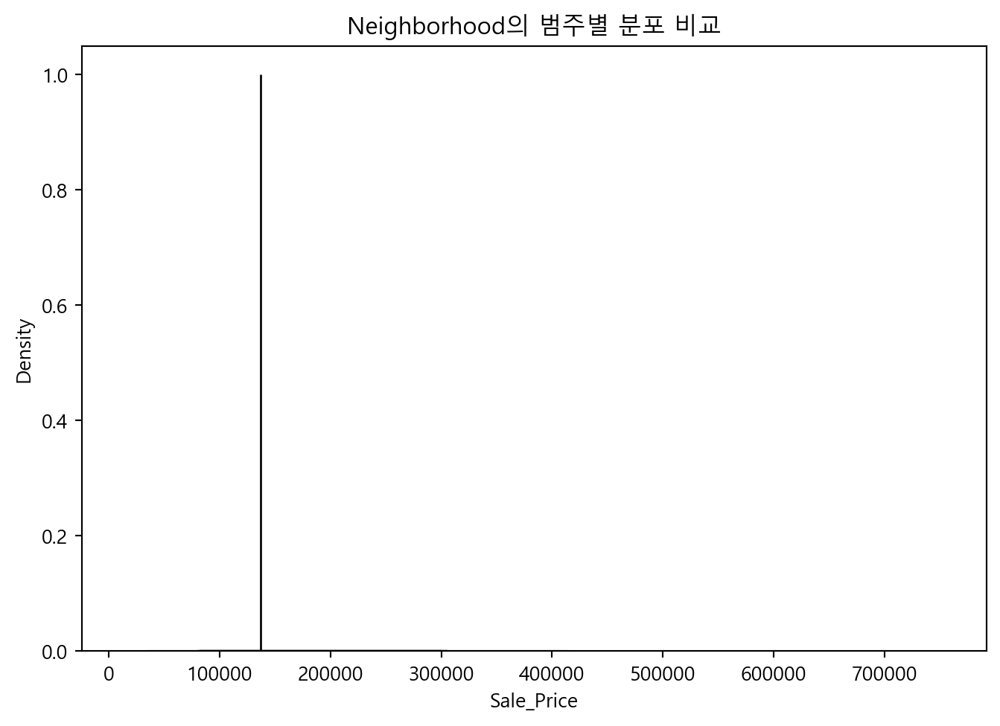
LandSlope
Gtl 1382
Mod 65
Sev 13
Name: count, dtype: int64 Gtl 약간 경사
Mod 보통 경사
Sev 심한 경사경사가 심하면 건축비용이 많이 든다길래 집값에 차이가 있을 줄 알았는데, 범주별로 분포의 차이가 없어보임. 파란색 분포에 이상치가 있어보임.
13. ‘Neighborhood’ : Physical locations within Ames city limits (집 위치)
train_cat_count('Neighborhood')
train_cat_hist('Neighborhood')
plt.clf()
sns.countplot(data=train_df, x='Neighborhood')
plt.xticks(rotation = 50)
plt.show()
b = train_df['Neighborhood'].unique()
plt.clf()
sns.histplot(train_df[train_df['Neighborhood']==b[0]]['SalePrice'], stat='density')
sns.histplot(train_df[train_df['Neighborhood']==b[1]]['SalePrice'], stat='density')
sns.histplot(train_df[train_df['Neighborhood']==b[2]]['SalePrice'], stat='density')
sns.histplot(train_df[train_df['Neighborhood']==b[3]]['SalePrice'], stat='density')
sns.histplot(train_df[train_df['Neighborhood']==b[4]]['SalePrice'], stat='density')
sns.histplot(train_df[train_df['Neighborhood']==b[5]]['SalePrice'], stat='density')
sns.histplot(train_df[train_df['Neighborhood']==b[6]]['SalePrice'], stat='density')
sns.histplot(train_df[train_df['Neighborhood']==b[7]]['SalePrice'], stat='density')
sns.histplot(train_df[train_df['Neighborhood']==b[8]]['SalePrice'], stat='density')
sns.histplot(train_df[train_df['Neighborhood']==b[9]]['SalePrice'], stat='density')
sns.histplot(train_df[train_df['Neighborhood']==b[10]]['SalePrice'], stat='density')
sns.histplot(train_df[train_df['Neighborhood']==b[11]]['SalePrice'], stat='density')
sns.histplot(train_df[train_df['Neighborhood']==b[12]]['SalePrice'], stat='density')
sns.histplot(train_df[train_df['Neighborhood']==b[13]]['SalePrice'], stat='density')
sns.histplot(train_df[train_df['Neighborhood']==b[14]]['SalePrice'], stat='density')
plt.title('Neighborhood 범주별, SalePrice 분포')
plt.show()
print(train_df['Neighborhood'].value_counts().sort_index())Neighborhood
Blmngtn 17
Blueste 2
BrDale 16
BrkSide 58
ClearCr 28
CollgCr 150
Crawfor 51
Edwards 100
Gilbert 79
IDOTRR 37
MeadowV 17
Mitchel 49
NAmes 225
NPkVill 9
NWAmes 73
NoRidge 41
NridgHt 77
OldTown 113
SWISU 25
Sawyer 74
SawyerW 59
Somerst 86
StoneBr 25
Timber 38
Veenker 11
Name: count, dtype: int64 Blmngtn Bloomington Heights
Blueste Bluestem
BrDale Briardale
BrkSide Brookside
ClearCr Clear Creek
CollgCr College Creek
Crawfor Crawford
Edwards Edwards
Gilbert Gilbert
IDOTRR Iowa DOT and Rail Road
MeadowV Meadow Village
Mitchel Mitchell
Names North Ames
NoRidge Northridge
NPkVill Northpark Villa
NridgHt Northridge Heights
NWAmes Northwest Ames
OldTown Old Town
SWISU South & West of Iowa State University
Sawyer Sawyer
SawyerW Sawyer West
Somerst Somerset
StoneBr Stone Brook
Timber Timberland
Veenker Veenker분포 차이가 있는 지역이 있는 것 같음. <- 특정 지역은 집값의 차이가 있다고 볼 수 있음. 집값이 비슷한 지역끼리 묶어서 분석해볼 수도 있을 것 같음.
빨간색, 파란색 분포에서 이상치가 있어보임.
보라색, 하늘색, 주황색, 회색, 분홍색 지역은 특정 집값에 몰려있는 것 같음.
집 데이터가 가장 많은 지역은 NridgHt임. 그 다음이 CollgCr임.
plt.clf()
sns.histplot(train_df[train_df['Neighborhood']==b[0]]['SalePrice'], stat='density')
sns.histplot(train_df[train_df['Neighborhood']==b[10]]['SalePrice'], stat='density')
plt.title('Neighborhood 범주별, SalePrice 분포')
plt.show()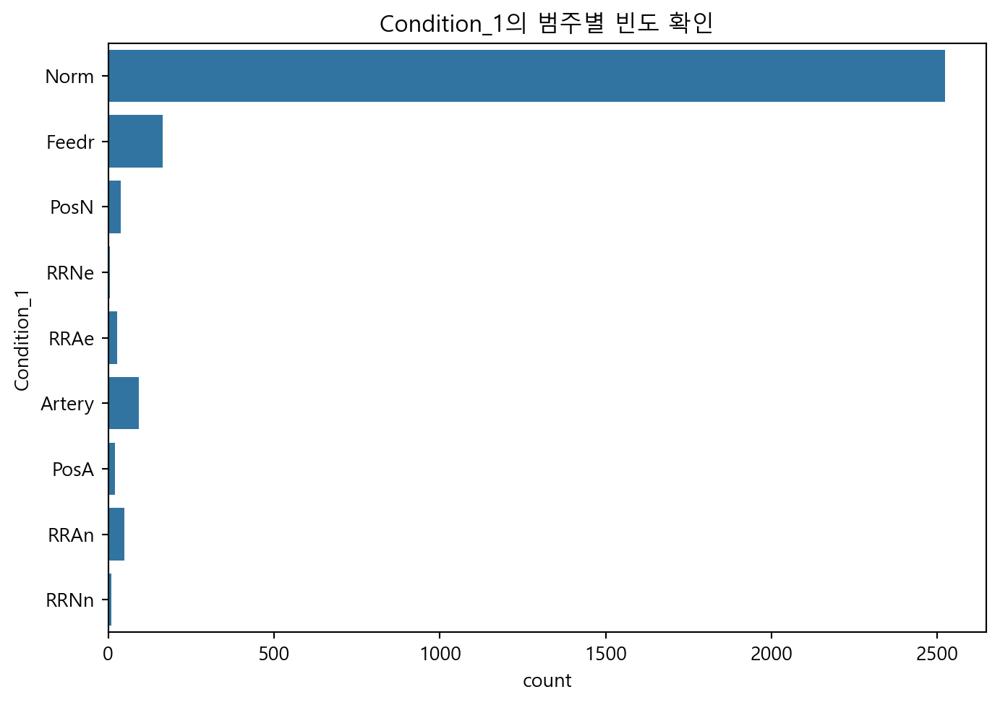
집 데이터가 가장 많은 두 지역을 보면 집값 차이가 큼